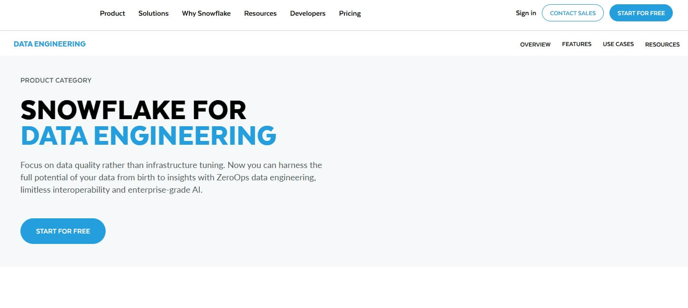
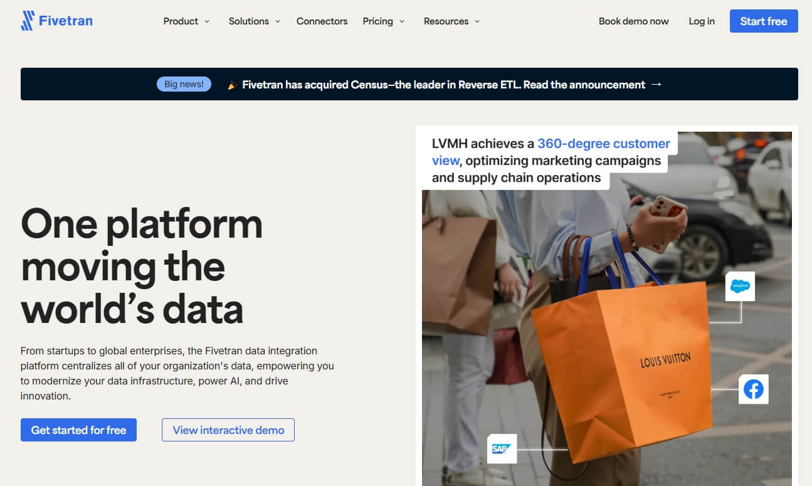

此外，衆多供應商已擴展其産品組合，推出 AI 輔助數據處理、確保法規合規的托管服務，以及主動支持體繫等新功能。本文將對企業級 AI 數據管道解決方案展開深入分析，並特別聚焦 Bright Data——這一以全麵托管服務、強大數據採集基礎設施，以及對合規與安全的堅定承諾而聞名的解決方案。
什麼是 AI 數據管道？
AI 數據管道是一套端到端工作流：攝取原始數據，將其轉換爲機器學習模型可學習的表示，訓練或微調模型，評估性能，並將其部署到生産環境——同時持續監控數據與模型質量。與傳統 ETL/ELT 管道僅關注將數據移入倉庫或 BI 層不同，AI 管道還必須處理數據、代碼與模型的版本管理；源數據追踪；可複現實驗；分佈式訓練；在線/離線特徵存儲；以及由漂移或性能下降觸髮的自動重訓練。
AI 管道 VS 傳統數據管道
傳統管道攝取原始數據，執行基於 SQL 的清洗與聚合，然後將結果加載到倉庫供儀表闆使用；任務完成後，直至下一批次才會再次啟動。
AI 管道起步方式相同，但會立即對每個數據集、特徵和模型構件進行版本管理。它們運行 GPU 加速的特徵工程，啟動分佈式訓練，依據公平性與準確率閾值進行評估，並以生産規模提供服務。生産預測會實時回傳，當檢測到漂移時觸髮自動重訓練，因此管道持續學習，而非結束。
| 維度 | 傳統數據管道 | AI 數據管道 |
|---|---|---|
| 主要目標 | 交付幹淨、可用於分析的數據，用於報表與儀表盤 | 交付高質量的特徵，並持續優化模型 |
| 終端用戶 | 業務分析師、BI 工具 | 數據科學家、機器學習工程師、推理服務 |
| 數據粒度 | 聚合、去標識化、曆史數據 | 原始或近原始事件、時間序列、圖像、音頻 |
| 轉換邏輯 | SQL、確定性規則 | 特徵工程：統計變換、嵌入、數據增強 |
| 計算模式 | 批處理 ETL/ELT；偶爾微批 | 批處理 + 流處理 + GPU/TPU 訓練與推理 |
| 治理重點 | 數據質量、GDPR 合規 | 數據質量 + 模型公平性、可解釋性、源數據、模型注冊表 |
| 版本控製 | 數據集快照 | 數據、代碼、超參數、模型製品 |
| 反饋閉環 | 人工 QA 與定時重載 | 自動漂移檢測、重訓練、A/B 測試、影子部署 |
| 典型工具 | Airflow、dbt、Snowflake | Kubeflow、MLflow、Vertex AI、Feast、Ray、TFX |
1. Bright Data Managed Service

Bright Data 托管服務是一項全外包、企業級的數據採集解決方案，無需任何工程投入即可將公開網絡轉化爲幹淨、結構化且合規的數據集。專屬項目經理首先確定數據來源、關鍵指標與交付格式，隨後 Bright Data 通過其覆蓋 195 個國家、超 1.5 億真實用戶 IP 的全球代理網絡，實現規模化自動提取。內置去重、驗証與增強流水線生成可直接用於分析的數據表，實時儀表闆和專家報告將原始記錄轉化爲可落地的洞察。從數千行到數十億行，服務彈性擴展，保持 99.99 % 可用時間，並全麵遵循 GDPR、CCPA 及各站點政策。
2. Rivery

Rivery 是一個零代碼、原生雲的 AI 數據管道平颱，專爲向生成式 AI 和 RAG 應用實時輸送高質量數據而設計。僅需數分鐘，200+ 托管連接器即可將結構化與非結構化來源——數據庫、CRM、營銷套件、API——同步到 Snowflake、BigQuery 或任意向量存儲。Push-down SQL 與內聯 Python 轉換負責清洗、分塊與嵌入內容，Snowflake Cortex、Vertex AI 等向量型目的地毫秒級存儲向量以供檢索。可視化編排層在上遊數據落地瞬間即觸髮 GenAI 任務，而 Rivery Copilot 可按需自動生成新連接器或自定義邏輯，省去數天工程時間。
3. Snowflake
Snowflake AI 數據管道是一個零運維、端到端的環境，可將數據從“原始狀態”直接轉換爲“AI 就緒”，無需任何基礎設施調優。工程師可將任何結構化、半結構化或非結構化來源——批式或流式——接入基於 Apache Iceberg 的開放湖倉，隨後使用 SQL、dbt 項目、Snowpark Python 或 pandas 級 Modin 進行轉換。內置 Cortex LLM 與 Document AI 服務就地完成嵌入、分類、摘要與翻譯，實時注入下遊代理和應用的 RAG 流程。Git 原生 DevOps、可觀測視圖及按用量計費的彈性計算，讓團隊在確保數據 SLA 的同時，將典型 Spark 成本削減逾 50%。
4. DataBahn

DataBahn 提供一套 AI 原生的數據管道管理平颱，將整個遙測生命週期——從任意來源到任意目的地——轉化爲受治理且富含洞察的連續流。其 Smart Edge 層完成無代理採集與邊緣分析，Highway 則負責 AI 驅動的過濾、模式漂移管理與成本優化。“盒裝 AI 數據工程師” Cruz 可自主解析、豐富並監控管道，徹底告別人工調優。所有數據最終匯入 Reef——一款情境圖數據庫，可關聯多源事件並保持 AI 就緒狀態。憑藉 500+ 即插即用的集成（覆蓋雲、本地及 IoT/OT 繫統），DataBahn 實現實時可見性，顯著削減 SIEM/存儲成本（客戶年省 25–35 萬美元），免除流量進出費用，且零代碼界麵讓非技術用戶也能在幾分鐘內上手。
5. Google Cloud Dataflow

Google Cloud Dataflow 是一個全托管的流式與批處理平颱，可將實時數據即時轉化爲 AI 就緒的智能。基於開源 Apache Beam 構建，它能攝取 Pub/Sub、Kafka、CDC、點擊流或 IoT 事件，並通過 GPU 加速的 MLTransform 與 RunInference，使用 Vertex AI、Gemini 或 Gemma 模型對流進行富化——全程無需管理服務器。自動擴縮集群可在 0 到 4,000 個工作節點間彈性伸縮，處理 PB 級數據；Dataflow 診斷控製颱可精準定位瓶頸、採樣數據並預測成本。預置模闆與 Vertex AI Notebook 讓團隊在幾分鐘內啟動安全、低延遲的 ETL、RAG 或生成式 AI 管道，並將結果實時冩入 BigQuery、Cloud Storage 或下遊應用，用於個性化體驗、欺詐檢測或威脅響應。
6. VAST

VAST Data 以單一、AI 優先的操作繫統取代分散的存儲層級，讓數據從原始攝取到生産級訓練與推理全程無需遷移。平颱基於 EB 級全閃存架構，通過多協議 NFS、SMB、S3 或 GPU-direct 路徑攝取結構化與非結構化數據流，並在數據庫內完成實時清洗、量化、嵌入與 RAG 增強。全局命名空間結合零拷貝快照與不可變版本控製，支持上千租戶共享同一邏輯池，同時保持嚴格 QoS 與零信任隔離。最終形成一條整合式管道，將延遲壓至微秒級，持續餵飽 GPU，並通過消除跨繫統重複拷貝顯著降低 TCO。
7. Fivetran Automated Data Movement
Fivetran 提供一條全托管、企業級的數據流通骨幹，可在數分鐘內將 700+ SaaS、數據庫、ERP 與文件源轉化爲麵向分析和 AI 的高價值資産。憑藉零代碼連接器、自動模式漂移處理以及內置變更數據捕獲，原始數據被攝取、標準化並以 PB 級規模流式冩入雲數據倉庫、湖或向量存儲。混合部署選項讓團隊既能將敏感工作負載保留在本地，又能複用同一條已通過 SOC 2 / ISO 27001 / GDPR / HIPAA 認証的管道。通過消除工程負擔，Fivetran 爲實時儀表闆、機器學習特徵及生成式 AI 應用顯著縮短洞察時間。
8. Azure Data Factory

Azure Data Factory (ADF) 是微軟全托管、無服務器的數據集成服務，可將本地、SaaS 與雲端數據統一爲一條 AI 就緒管道。通過拖拽式畫佈或 Git 驅動的 CI/CD 工作流，平民集成者與專業開髮者都能設計 ETL 與 ELT 流程——利用 90+ 內置、免維護的連接器攝取 SAP、Salesforce、Cosmos DB、REST API 等來源。托管的 Apache Spark 引擎自動生成並優化轉換代碼，意圖驅動的映射加速模式對齊。管道可將清洗、富化後的數據直接送入 Azure Synapse Analytics、Azure ML 或 AI 服務，實現實時商業洞察與模型訓練，全程受微軟企業級安全與 100+ 合規認証保護。
9. AWS Glue

AWS Glue 是一項全托管、無服務器的數據集成服務，可加速 AI 管道的每一環節——從原始攝取到模型就緒的數據集——無需預置或調優任何基礎設施。連接器可自動髮現並編目 100+ 個 AWS、本地及第三方來源的元數據；Glue Studio 的可視化 ETL 畫佈或交互式 Notebook 讓工程師通過 Apache Spark 或 Ray 設計按需從 GB 擴展到 PB 的管道。內置生成式 AI 助手可自動生成 PySpark 代碼、推薦模式演進策略，並爲作業故障提供根因修複，將開髮週期從數天縮短至數分鐘。與新一代 Amazon SageMaker 深度集成後，Glue 將清洗、富化後的數據直接流式注入特徵存儲、向量數據庫與訓練集群，實現實時實驗與持續重訓。
10. Apache Airflow

Apache Airflow 是開源的編排引擎，可將 Python 代碼直接轉化爲生産級 AI 數據管道。工作流以純 Python DAG 定義，支持動態任務生成、循環與分支，從而輕鬆覆蓋複雜機器學習生命週期——特徵提取、模型訓練、超參數調優與批量推理。基於消息隊列的後端讓調度器可橫向擴展至數千並髮 Worker，現代 Web UI 實時展示任務日誌、重試與 SLA。豐富的 Operator 生態開箱即連 Google Cloud、AWS、Azure、Snowflake、Spark、Kubernetes 等，將攝取、轉換、模型部署與監控步驟無縫串聯。一切皆代碼，團隊可像管理普通軟件一樣對管道進行版本控製、測試與複用，加速 AI 服務的實驗與持續交付。
11. Estuary

Estuary Flow 是一款雲原生實時數據集成平颱，專爲持續向 AI 與檢索增強生成（RAG）應用輸送最新、統一的數據而打造。藉助低延遲 CDC 與流式處理，Flow 實時同步 Salesforce、HubSpot、Postgres、Kafka 等來源，並通過聲明式 SQL/TypeScript 轉換即時清洗、豐富並演進模式。結果可在亞秒級窗口內直接物化到 Pinecone、Snowflake 等向量存儲，確保模型始終檢索到最新上下文。內置背壓處理與精確一次語義讓 Flow 從 MB 級到 TB 級無運維負擔地彈性擴展，使數據科學家專注提昇模型精度，而非底層工程。
12. Snowplow

Snowplow 提供實時、高可擴展的行爲數據管道，專爲將原始客戶互動轉化爲 AI 就緒數據集而設計。通過 35+ 第一方追踪器與 Webhook，它從網頁、移動端、IoT、遊戲及 AI 代理捕捉細粒度事件，自動爲每條事件附加 130+ 上下文屬性並在傳輸過程中進行模式校驗。流內富化——PII 假名化、機器人檢測、渠道歸因——可通過 JavaScript、SQL 或 API 實時運行，在符合 GDPR、CCPA 與 HIPAA 的前提下保持低延遲。統一事件表直接落地到 Snowflake、Databricks、BigQuery、S3 或 Kafka、Pub/Sub 等流式接收端，免去多表關聯，加速下遊 ML 與 RAG 工作負載。企業可選擇 Snowplow 托管版或部署於 AWS、GCP、Azure 的私有托管雲，享受企業級安全與 SLA 保障。
結論
企業級 AI 數據管道對於釋放 AI 驅動運營的全部潛能至關重要。一條穩健的管道不僅能確保數據及時、安全地流動，還能提供可落地的洞察，推動業務創新。通過對領先解決方案的對比評估可見，儘管衆多平颱在數據集成、支持能力與可擴展性方麵各有所長，
儘管許多方案在特定領域表現出色，Bright Data 的托管服務——憑藉強大的集成能力、主動式支持以及全麵的安全框架——使之成爲企業構建高效、可靠且麵向未來的 AI 數據管道的首選。